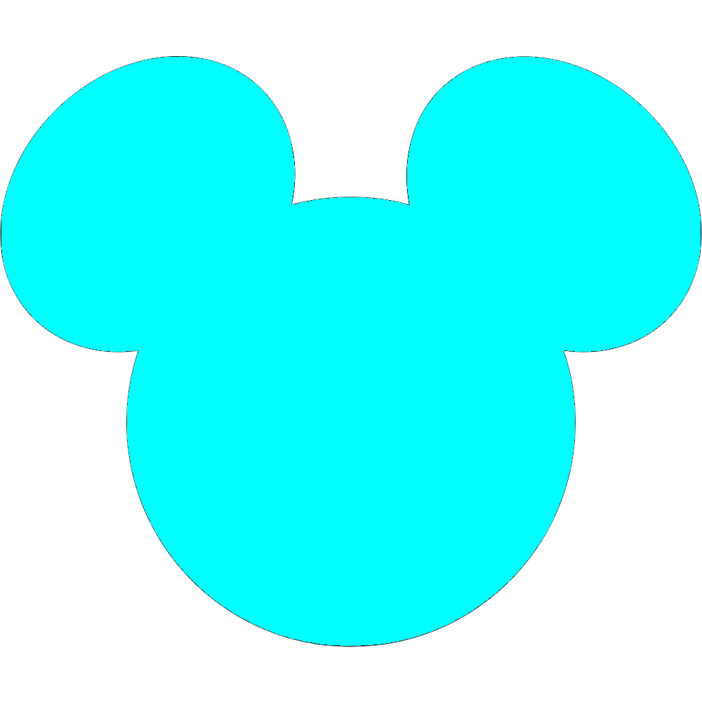

読み込み中です...
未ログイン
ログイン
ログアウト
🔑
ログインが必要です
お気に入り機能を使うには、Google アカウントでログインしてください。
ログインすると、端末をまたいでお気に入りを共有できます。
閉じる
ログインする
⬅️
リアルタイム
戻る
🏰 ランド
🌋 シー
📅
比較
📊
週末/平日
🎪
イベント
管理
未ログイン
ログイン
ログアウト
📊
待ち時間履歴
読み込み中...
⬅️ 一覧
日
週
月
年
日付を選択...
📅 前回の来園日と比較
✕
📊 週末 vs 平日
✕
🎪 イベント管理
✕
イベントを追加
〜
追加
登録済みイベント